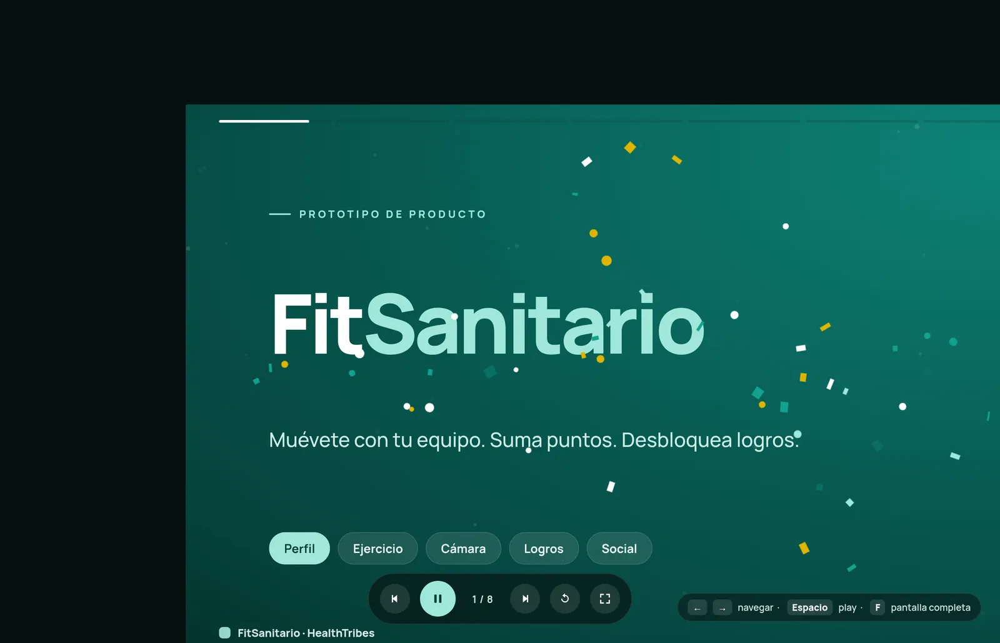
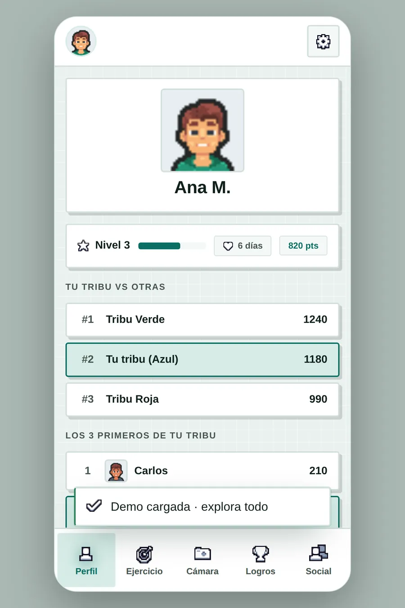

FitSanitario
What is FitSanitario?
A team fitness app for healthcare workers, brand-named HealthTribes. Staff join a tribe, log training at home or at the gym, earn points and unlock achievements — with the competition running between tribes rather than between individuals.
The deliverable was two things at once: a navigable prototype that behaves enough like the product to be believed, and the commercial deck that sells it.
One state object, one render
The prototype is a hand-rolled render loop over a single global state object. Every change rewrites the screen from scratch and re-wires its handlers — no diffing, no framework, no virtual DOM. Screens are functions in a map, routing is one string on the state, and the whole thing persists to localStorage so a demo survives a reload.
It sounds crude and it is exactly right for the job: the whole prototype is one file, it opens by double-clicking, and there is no step between "I changed something" and "you can see it".
Ideal and MVP, side by side
There are two prototypes, not one. The full-vision build carries all five tabs; the MVP carries three — profile, exercise and camera. They are independent files and share no code, and the landing page presents them next to each other on purpose, so the conversation about scope happens against two things you can actually open rather than against a bullet list.
Everything is inlined — fonts, avatars, images, all as data URIs. That is why the deck is around 700 KB for eight slides, and it is a deliberate trade: the files can be emailed, opened from a USB stick, or served from anywhere, with nothing to install and nothing to break.
An eight-slide deck
The commercial presentation is its own single file with its own animation and scroll logic, sharing the branding with the app by convention rather than by code. It runs in a browser, full-screen, driven by the arrow keys or space — no slideware, no export step, no fonts that fail to load on someone else's laptop.
